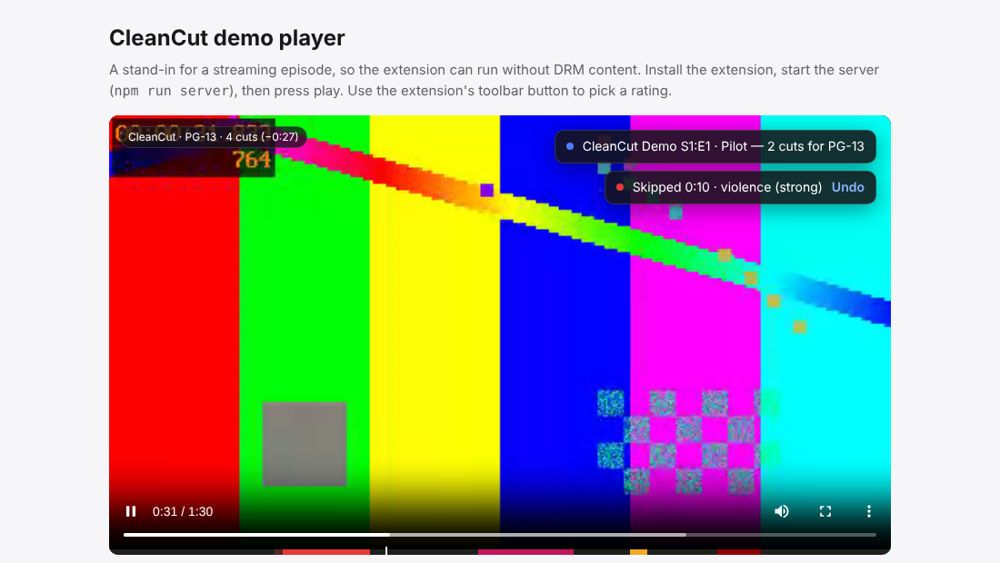
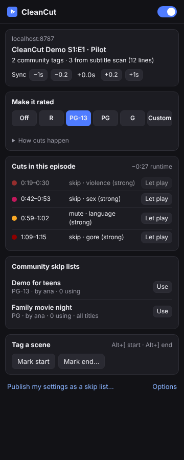

Watch any show at the rating you choose.
CleanCut runs on top of the streaming sites you already use and skips, mutes or blurs the scenes above your rating. Take an R-rated series and watch it as PG-13, PG or G.
Add to Chrome — freeHow it works Works in Chrome and Edge. Currently in beta.

How it works
1. Pick a rating
Choose R, PG-13, PG or G from the toolbar popup, or tune each category yourself: nudity, sex, violence, gore, language, drugs and frightening scenes.
2. It finds the scenes
CleanCut combines scene tags from the community with a scan of the episode's own subtitles, run in your browser before the scenes play.
3. You just watch
Scenes above your rating are skipped, muted or blurred. A small toast says what happened, and Undo lets any scene play.
Ratings you can see
Each preset is the highest level allowed to play, from mild to strong. Anything above it is cut. You can switch any category to skip, mute or blur.
| Preset | Nudity | Sex | Violence | Gore | Language | Drugs | Frightening |
|---|---|---|---|---|---|---|---|
| R | moderate | moderate | any | moderate | any | any | any |
| PG-13 | none | mild | moderate | mild | moderate | moderate | any |
| PG | none | none | mild | none | mild | mild | moderate |
| G | none | none | none | none | none | none | mild |
Built to stay out of your way
Private by design
Subtitles are analyzed on your device and never uploaded. The only thing sent out is which title you're watching, so we can look up its tags.
Community powered
Tag a scene with Alt+[ and Alt+] while you watch, vote on others' tags, and share your settings as a skip list.
You stay in control
CleanCut never copies, edits or redistributes a video. It only skips, mutes or blurs what's playing on your screen, for your own viewing.
Questions
Which sites does it work on?
Netflix and Prime Video, plus any page with a standard video player that publishes the right tags. Streaming sites change their pages often, so if something stops working after a site update, please tell us.
Why does it say "subtitles not scanned yet"?
The scan uses the English subtitle file the player downloads. Turn on English captions once, and the scan runs. You can hide the captions again afterwards.
Does it see the video frames?
No. Streaming video is protected, so extensions can't read the picture. CleanCut works from tags and subtitles, so it can miss a scene that has neither. That's why community tags matter, and why machine-detected scenes show as suggestions until you trust them.
Is it legal?
In the US, the Family Movie Act of 2005 allows skipping and muting parts of a film for private home viewing, as long as no altered copy is made. CleanCut works that way. Streaming services' terms and laws in other countries differ. This is not legal advice.
What does it cost?
Nothing. There are no ads and no tracking.
Is it affiliated with Netflix or Amazon?
No. CleanCut is an independent project. Netflix and Prime Video are trademarks of their respective owners.